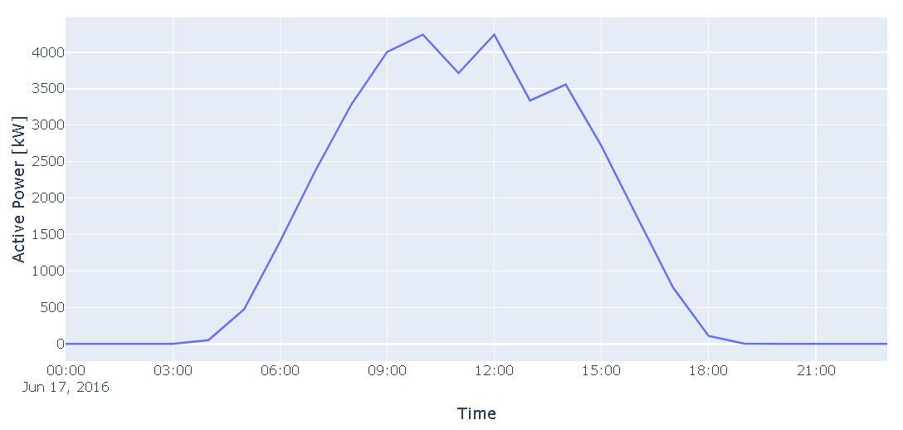

Examples¶
All of the following examples utilize grid FMUs created with SimulatorToFMU. SimulatorToFMU FMUs need to be recompiled at every new computer. Therefore, in order to run the examples, SimulatorToFMU needs to be installed on the local machine. Also, JModelica 2.4 needs to be installed on the computer. At the beginning of every example, the paths to - SimulatorToFMU - fmi-for-power-system - JModelica need to be specified. Also, a Windows environment variable PATH and a variable PYTHONPATH need to be set to the fmus/SimulatorToFMU_FMUs folder. After recompiling one FMU, export the created binaries into this folder, so they can be found when running the simulation.
Pandapower Co-Simulation¶
In the Pandapower Co-Simulation example, a PV FMU is connected to a Pandapower FMU. The PV FMU is created with Modelica and the Pandapower FMU is created with SimulatorToFMU. After setting all paths settings at the beginning, the code can be run. It creates the following results, which show some oscillations.
Advanced Pandapower Co-Simulation¶
The Advanced Pandapower Co-Simulation example is the same example like the regular Co-Simulation one. The difference is that it utilizes little convergence timesteps between the hourly timesteps of the simulation. This can damp oscillations resulting from feedback loops, but is still prone to those oscillations appearing between 2 timesteps. This is due to the step response between 2 timesteps.
Pandapower Model Exchange¶
The Pandapower Model Exchange example utilizes the FMU ME mode instead of the CS mode. By using a first order response FMU between grid and PV, algebraic loops can be solved by slowly ramping up the the equilibrium point. This prevents overshooting over the equilibrium point, which is likely to happen in the CS mode.